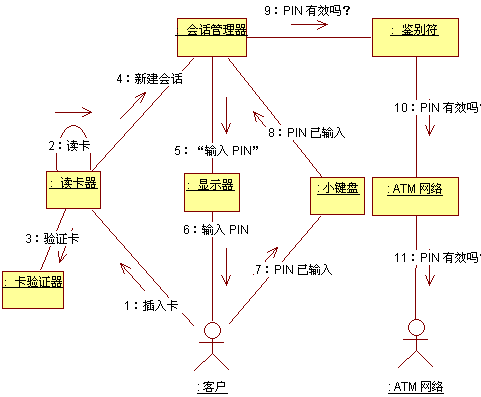

| 指南：用例分析研讨会 |
 |
|
简介在作为建立团队任务的早期迭代中，将用例分析作为小组任务来执行非常重要，并且可以建立系统体系结构的公共前景。它代表迭代中的一个重要转移点，因为它在用户对系统的了解（由用例表示）和系统设计人员对系统的了解（在此由分析类表示）之间提供了一座桥梁。 在后期的迭代中，或者因为有了经验丰富的团队，用例分析在更大程度上作为个人任务（或是完全作为单独任务）执行。当存在一个合适的现有设计模型时，查找新对象可能没有太大价值，因为设计中现有的类可能会解释新用例所需的任何系统行为。 所需技能研讨会应组织为一个集思广益的会谈，在会谈期间需要来自各领域的广泛技能：
保持小规模的研讨会：6-7 人以上将会限制所有成员的自由和公开参与。 所需装备
所需时间计划平均每个用例至少花几个小时。在早期所花的时间更长，但随着新类数量的下降以及小组经验的增加，所花的时间将减少。 角色以下职责出现在研讨会期间。轮换职责并让每个人都尝试所有职责，这是一个很好的想法。
举行研讨会团队逐步完成用例的事件流。对于用例中确定的每个行为，确定一个提供该行为的对象。该对象可以是某一现有类或需要创建的类的实例。 负责人在白板上绘制通信图，而每个人都参与讨论。 当对用例进行图示时，应在 A3/Legal 尺寸的纸上使用与白板图相同的颜色复制该图。 同时，按照工作产品：分析类中的“定制”部分所描述的格式，使用 A3/Legal 纸记录对象的职责。在记事条上记录相互协作的职责、事件和类；这将使职责轮换更为容易。 绘制通信图以下约定使这些图在研讨会期间更易理解和使用。
为用例的基本流程绘制一张图，也为备用流程绘制一些图。对于简单的用例，全部流程用一个视图可能就足够了。  自动柜员机中的用例认证用户的通信图示例。 |
© Copyright IBM Corp. 1987, 2006. All Rights Reserved. |